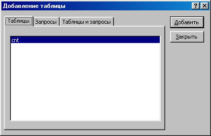
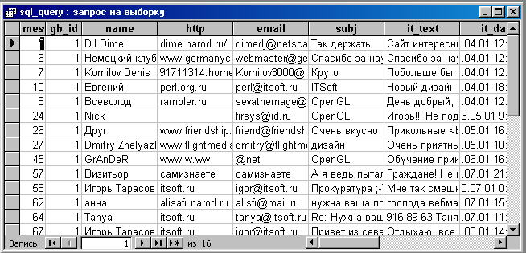
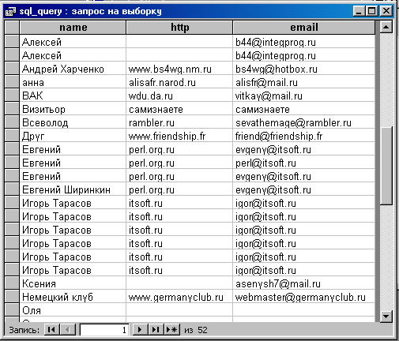
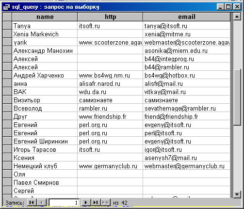

Инструкция SELECTДавайте выполним первый SQL-запрос. Для этого перейдите в раздел "Запросы". Выберите создание запроса в режиме конструктора. В появившемся диалоговом окне нажмите кнопку "Закрыть". Далее в меню "Вид" выберите пункт "Режим SQL". У вас должно появится на экране окно для ввода SQL запросов. Введите: SELECT * FROM message WHERE gb_id=1. В меню "Запрос" выберите пункт "Запуск" или нажмите иконку с восклицательным знаком на экране. Появится результат обработки этого запроса.  Это таблица, содержащая все сообщения, относящиеся к гостевой книге с идентификатором 1. Как вы видите, некоторые столбцы не содержат полезной информации. Оператор SELECT позволяет указать нужные нам столбцы. С помощью меню "Вид->РежимSQL" вернитесь в предыдущее окно и введите SELECT message_id as id,name, http, email, subj, it_text, it_date FROM message WHERE gb_id=1. Нажмите "Выполнить запрос" и вы увидите теперь только перечисленные столбцы. Обратите внимание, что мы переименовали первый столбец. Он показывается под именем id, а не message_id. Теперь, давайте отсортируем по дате в порядке убывания: SELECT message_id as id,name, http, email, subj, it_text, it_date FROM message WHERE gb_id=1 ORDER BY it_date DESC. Язык SQL довольно простой и интуитивно понятный. Рассмотрим синтаксис инструкции SELECT в общем случае.
SELECT [DICTINCT] имя_столбца [as новое_имя], имя_столбца2 [as новое_имя2], ...
FROM таблица1 | имя_курсора1, таблица2 | имя_курсора2, ...
[WHERE условие]
[GROUP BY имя_столбца1, имя_столбца2, ...]
[HAVING условие]
[ORDER BY имя_столбца1 [DESC], имя_столбца2 [DESC2], ...]
О курсорах, GROUP BY и HAVING будет рассказано чуть позже, после того, как вы познакомитесь с инструкциями добавления, редактирования и удаления данных. А пока рассмотрим на частных примерах использование инструкции SELECT во всех остальных случаях. Начнем с ключевого слова DISTINCT. Использование этого атрибута позволяет нам избежать повторяющихся записей. Допустим, мы хотим посмотреть всех авторов сообщений во всех гостевых книгах: SELECT name, http, email FROM message ORDER BY name. Обратите внимание, что теперь нет фильтра - инструкции WHERE, т.к. нас интересуют абсолютно все сообщения, вернее их авторы. Сортировка стоит по имени автора сообщения. Нас интересует сортировка по алфавиту(от меньшего к большему), поэтому атрибут DESC, который означает сортировать в обратном порядке мы не указываем. Результатом этого запроса будет таблица:  Вы видите, что в результате мы получили повторяющиеся записи, т.к. один человек мог написать несколько сообщений. Теперь добавьте слово DISTINCT: SELECT DISTINCT name, http, email FROM message ORDER BY name, и вы увидите, что дублей больше нет.  Наиболее интересным и сложным является инструкция WHERE. Мы будем рассматривать инструкцию: SELECT gb_id as id, name, quantity as q, description, it_date FROM gb, т.е. выборку идентификаторов гостевых книг, владельцев, количества сообщений, выводимых на одну страницу, описание и дату. Некоторые условия не имеют какого-либо осмысленного описания. Они приводятся в демонстративных целях. Для задания условия можно использовать:
УпражненияНапишите следующие запросы:
|
|
|
||